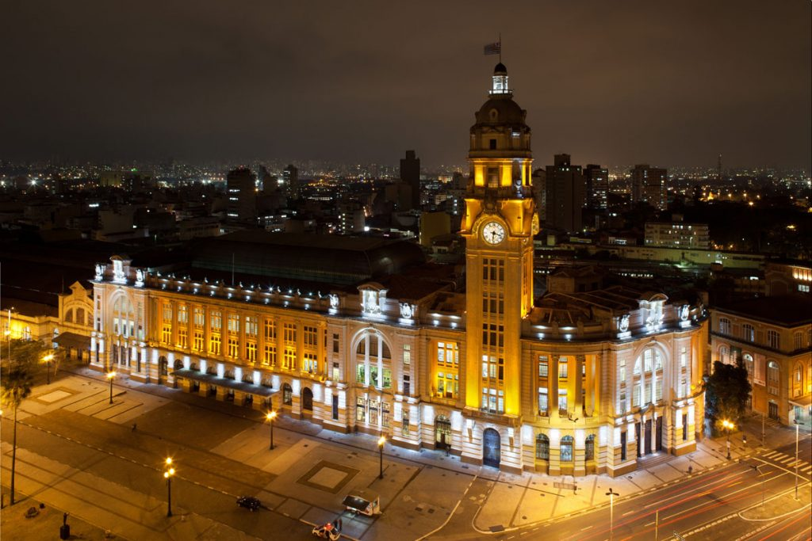
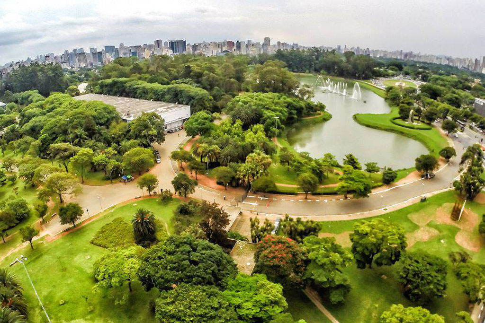
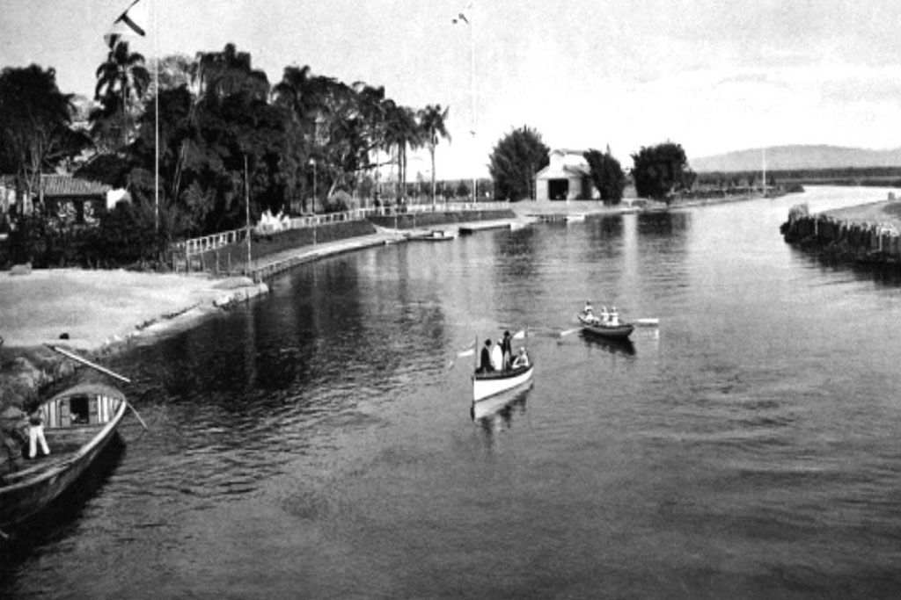

A história da cidade de São Paulo ocorre paralelamente à história do Brasil, ao longo de aproximadamente 465 anos de sua existência, contra os mais de quinhentos anos do país. Todavia tenha sido marcada por uma relativa inexpressividade, seja do ponto de vista político ou econômico, durante os primeiros três séculos desde sua fundação, São Paulo destacou-se em diversos momentos como cenário de variados e importantes momentos de ruptura na história do país. São Paulo surgiu como missão jesuítica, em 25 de janeiro de 1554, reunindo em seus primeiros territórios habitantes de origem tanto europeia quanto indígena. Com o tempo, o povoado acabou caracterizando-se como entreposto comercial e de serviços de relativa importância regional. Esta característica de cidade comercial e de composição heterogênea vai acompanhar a cidade em toda a sua história, e atingirá o seu ápice após o espetacular crescimento demográfico e econômico advindo do ciclo do café e da industrialização, que elevariam São Paulo ao posto de maior cidade do país.
Interessado em estabelecer um local onde pudesse catequizar os indígenas longe da influência dos homens brancos[2], o padre Manuel da Nóbrega, superior da Companhia de Jesus no Brasil, observou que uma região próxima, localizada sobre um planalto, seria o ponto ideal, então chamado de Piratininga. Em 29 de agosto de 1553, padre Nóbrega fez 50 catecúmenos entre os nativos, o que fez aumentar a vontade de fundar um colégio jesuíta no Brasil. Embora a busca da catequese sem a influência do homem branco fosse um objetivo, o que precipitou a mudança para o planalto foi a necessidade de resolver o problema de alimentação dos indígenas que estavam sendo doutrinados, como afirma o padre Anchieta.
Em janeiro de 1554, um grupo de jesuítas, comandado pelo padre Manuel da Nóbrega e auxiliado pelo igualmente jesuíta José de Anchieta, chega ao planalto, auxiliado por João Ramalho. Com o objetivo de catequizar os índios que viviam na região, os jesuítas erguem um barracão de taipa de pilão, em uma colina alta e plana, localizada entre os rios Tietê, Anhangabaú e Tamanduateí, com a anuência dos chefes indígenas locais, como o cacique Tibiriçá, que comandava uma aldeia de tupiniquins nas proximidades, e o chefe Tamandiba. Em 25 de janeiro daquele ano, dia em que se comemora a conversão do apóstolo Paulo, o padre Manuel de Paiva celebra a primeira missa na colina. A celebração marcou o início da instalação dos jesuítas no local, e entrou para a história como o nascimento da cidade de São Paulo. Dois anos depois, os padres erguem uma igreja – a primeira edificação duradoura do povoado. Em seguida, ergueram o colégio e o pavilhão com os aposentos. Destas construções originais, resta apenas uma parede de taipa, onde hoje encontra-se o Pátio do Colégio.
O governo paulista passa a desenvolver um plano de fixação de suas populações em áreas exploradas da capitania, e começa a fornecer incentivos à lavoura e à indústria. O plantio da cana-de-açúcar é estimulado nas áreas a sudeste da capital, e grandes fábricas de tecelagem e fundição são instaladas. Em 1792, a abertura da Calçada do Lorena, importante obra de engenharia do período colonial, ligando as cidades de São Paulo e Santos, forneceria condições adequadas para o transporte de açúcar e de outros gêneros alimentícios produzidos no interior da capitania. São Paulo é beneficiada por sua posição geográfica estratégica, como encruzilhada natural das vias de circulação entre o interior e o litoral da colônia. Afirma então seu papel de centro comercial, através do qual se fazia o escoamento da produção, rumo ao porto de Santos. De forma ainda intermitente, São Paulo começa a prosperar, e novas edificações são erguidas. Em 1750, com a expulsão dos jesuítas do Brasil, dessa vez por determinação do marquês de Pombal, os bens da ordem são confiscados. A igreja dos jesuítas, reconstruída no início do século XVIII, é transformada em sede da administração da capitania (agora, já separada de Minas Gerais e renomeada Capitania de São Paulo). Em 1765, é fundada a Casa de Ópera do Pátio do Colégio, primeiro teatro da cidade, e em 1775 é inaugurado o Cemitério dos Aflitos, primeira necrópole paulistana, destinada ao enterro de pobres, escravos e condenados à forca. Também do século XVIII são o Mosteiro da Luz (recolhimento de religiosas construído em taipa de pilão, a partir do projeto de Frei Galvão, de 1774) e a Igreja das Chagas do Seráfico Pai São Francisco (1787), entre outros. Em 1798, a cidade inaugura seu Jardim Botânico (atual Jardim da Luz). Ainda no fim do século XVIII, por iniciativa do marechal José Arouche de Toledo Rendon, os limites urbanos da cidade são expandidos, com a abertura da rua São João e da ponte do Marechal, sobre o rio Anhangabaú. Começa a ser formado o Campo do Curro, atual Praça da República.
Em 1825, é criada a Biblioteca Pública Oficial de São Paulo, a primeira da província. Em 1827, é lançado o primeiro periódico da cidade, O Farol Paulistano. Em 1828, é inaugurada a Faculdade de Direito do Largo São Francisco. Trata-se da mais antiga instituição de ensino jurídico do país, ao lado da Faculdade de Direito de Olinda, ambas instituídas por decreto imperial de 1827. Após a instalação da faculdade, a cidade recebe o título de "Imperial Cidade e Burgo dos Estudantes de São Paulo de Piratininga". O conseqüente afluxo de mestres e estudantes ocasiona uma radical mudança no cotidiano da cidade. Além de demandar a construção de hotéis, restaurantes e núcleos artísticos, a aglomeração de acadêmicos enriquece a vida cultural paulistana. Ao longo da história, a faculdade (incorporada à USP em 1934) tornaria-se responsável pela formação de parte considerável da elite intelectual e política brasileira, e seu edifício (instalado no local do antigo convento de São Francisco) foi palco de atos e manifestações públicas relacionadas a inúmeros fatos da vida política do país.
  